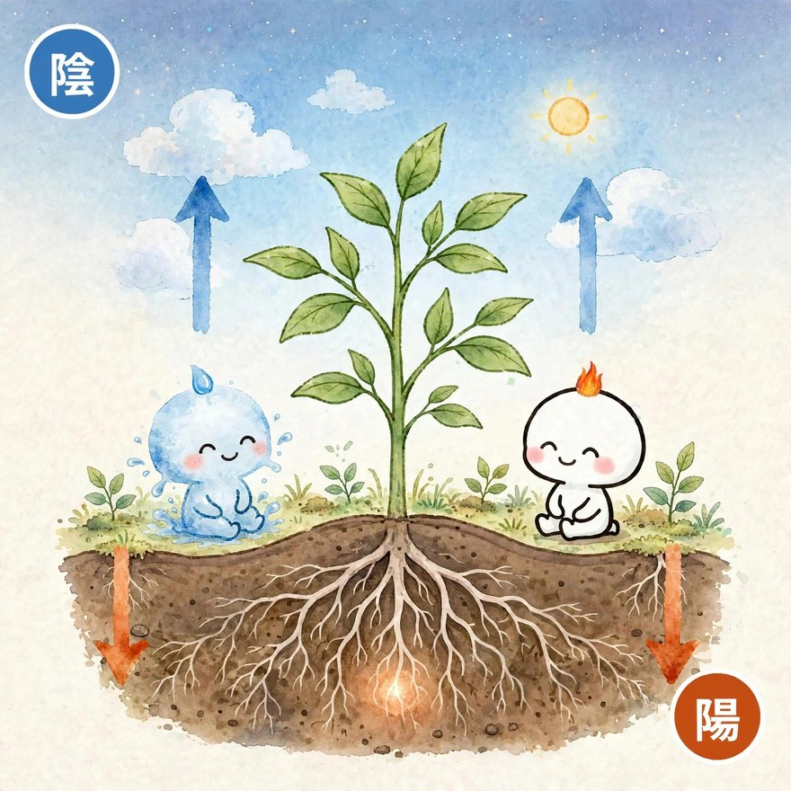
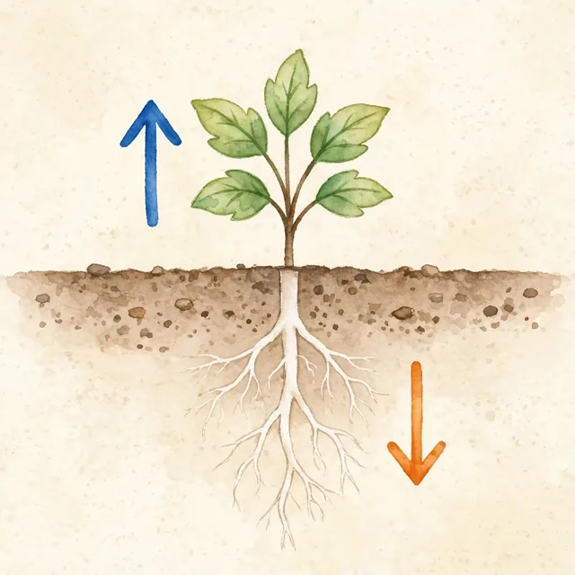
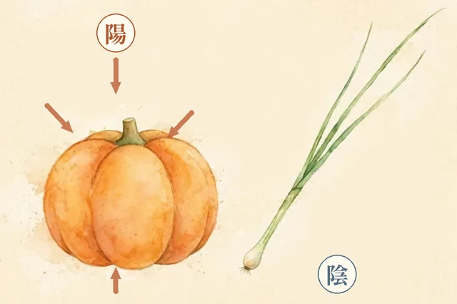

陰陽クイズ
2つのものを比べて、陰陽を読む練習です。
絵を見て、考えてみてくださいね。

陽は、中心へギュッと集まる力。
陰は、外へふわっと広がる力。
覚えるのは、この定義だけです。
基本の3つの見方

① 上か下かより下へ向かうものほど、陽寄り。地球の中心へ向かう力と見ているからです。
② 形より丸いものほど、陽寄り。物が1つだけでは、陰陽は言えません。
右と左みたいに、2つ比べて初めて言えます。
クイズ

おつかれさまでした。
陰陽は、見て練習するものですね。
おうちでも、陰陽メガネで眺めてみてくださいね。
このクイズは、マクロビオティックの眺め方をもとにした、練習のための目安です。
人の体や顔も、よい・わるいではなく、見方の練習として眺めるものです。